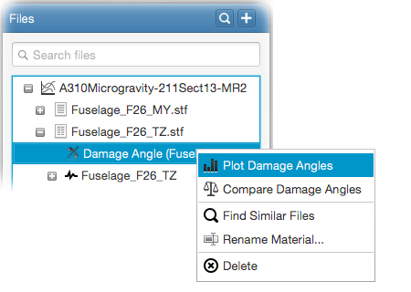

How to plot damage angles
After a damage angle analysis, all incremental damage angles are computed and stored in the database with their related
equivalent stresses. Computed damage angles can be plotted on a bar chart by right-clicking on the - Damage Angle
item and selecting - Plot Damage Angles
from the popup menu as follows;
